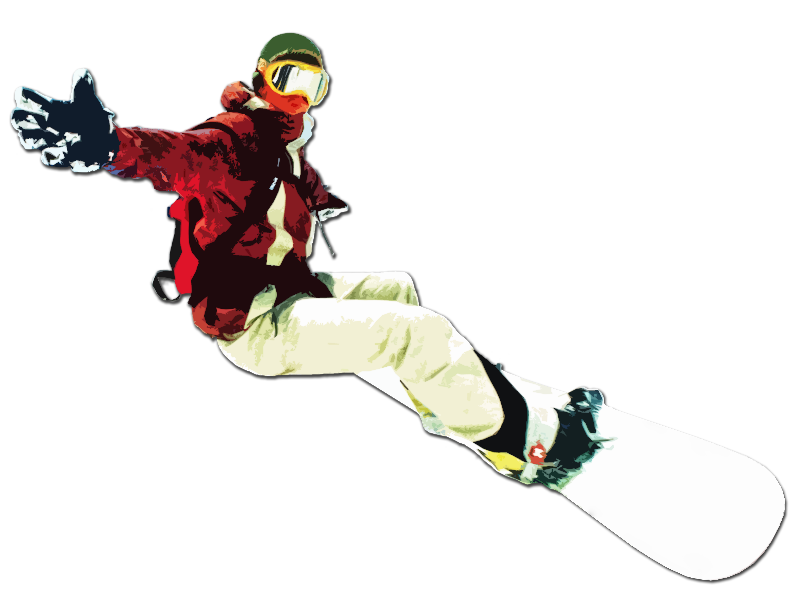

Сноуборд
 СНОУБОРДИНГ (англ. snowboarding, от snow – снег и board – доска)
– вид спорта, включающий в себя скоростной спуск с горного склона,
выполнение акробатических элементов на специальной трассе и пр. на сноуборде
– монолыже с окантовкой, на которой установлены крепления для ног.
Сноубординг возник как естественное продолжение горнолыжного спорта.
(Хотя сами сноубордисты с большой неохотой признают, – или не признают вовсе, – это родство,
считая сноубординг совершенно самостоятельным видом спорта).
Сноуборд несколько уступает горным лыжам в скорости (100 км/ч против 150), но превосходит по остроте ощущений.
К тому же азы сноуборд-техники осваивать легче, а доска свободнее в управлении.
В отличие от горнолыжников, сноубордисты (их также называют «бордерами», или «райдерами»)
стоят на доске не лицом, а боком относительно направления движения (заимствование из серфинга).
При этом важное значение имеет стойка спортсмена.
На жаргоне, сноубордист, который ездит левой ногой вперед, – «регуляр» (англ. regular), правой – «гуфи» (goofy).